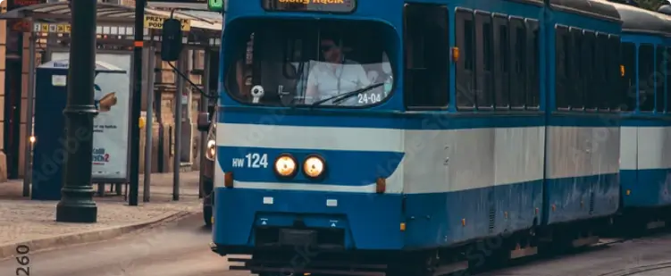
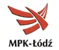
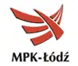
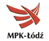

Ми розуміємо, наскільки незручно буває гадати, як купити квиток на зупинці.
Ми знаємо, як це важко в черзі до каси чи автомата. Дійсно. У нас були ті ж проблеми.
Саме тому ми створили додаток, який полегшить ваше життя, коли ви перебуваєте в місті, в дорозі.
zbiletem — найпростіший додаток для купівлі квитків на громадський транспорт.
Якщо ви регулярно подорожуєте, ви оціните зручність місячного абонементу в додатку.
Якщо ви користуєтеся громадським транспортом лише зрідка,
ви можете швидко купити квиток у 3 кліки, коли вам це потрібно.
Виберіть свій квиток у додатку
Оплата за кілька секунд
Подорожуйте вільно
Найпростіший спосіб отримати квитки
Ви можете забути про черги до квиткових автоматів чи години роботи кас.
З квитком у смартфоні вам буде комфортніше подорожувати. І ви ніколи не втратите свій квиток.
Також в інтернет-магазині можна придбати абонемент для своїх близьких.
Про квитки в додатку
Кількість квитків, придбаних у мобільних додатках, постійно зростає.
У додатку з квитком їх можна купити найзручніше та швидше. Після вибору способу оплати в
першу покупку, інший квиток можна купити в 3 кліки за кілька секунд.
Ви можете показати активний квиток у додатку для перевірки навіть офлайн. Незалежно від того, чи використовуєте ви
ZTM, MPK або MZK у вашому місті, додаток zbiletem — ідеальний супутник для вас.
Про цю програму
Додаток zbiletem рекомендують 70% користувачів. Ти знаєш чому?
Ми розробляємо його з 2015 року, прислухаючись до користувачів, тому його так цінуємо.
Ми працюємо в понад 60 містах Польщі. Щодня тисячі людей подорожують комфортніше з квитком
щомісяця в цій програмі. Щомісяця користувачі програми купують сотні тисяч за квиток
квитки
тимчасові та одноразові. З цією програмою вам не доведеться хвилюватися, чи буде працювати квитковий автомат,
ви завжди можете мати його в кишені.

Для міст і операторів
zbiletem — це рішення для міст, муніципалітетів і операторів громадського транспорту
колективний.
Ми пропонуємо комплексне рішення з продажу, активації та контролю мобільних квитків.
Вся система включає: мобільний додаток користувача, інтернет-магазин, панель управління,
додаток-контролер і ряд API для співпраці зі сторонніми рішеннями.
Додаток zbiletem можна впровадити як у великих, так і в малих містах за кілька днів
тижнів. Це дешевше порівняно з іншими, які потребують персоналу або дорогого обладнання,
канали збуту квитків на громадський транспорт.
Серед наших рішень ви також знайдете першу в Польщі систему активації квитків
на основі QR-кодів у транспортних засобах.
Ваші квитки можуть бути доступні в додатку zbiletem.pl лише за кілька тижнів. Напишіть
на адресу kontakt@zbiletem.pl, щоб домовитися про зустріч чи розмову.
Питання що часто задаються
Найчастіше причиною відсутності квитка в додатку є неправильно вказаний номер телефону
під час покупки. Якщо ви не бачите свій квиток, зв’яжіться з нами електронною поштою
на kontakt@zbiletem.pl або в соціальні мережі
надання правильного номера телефону та адреси електронної пошти, вказані при купівлі квитка. Номер виправимо
для вас і повідомте вам.
Додану платіжну картку можна видалити при купівлі одного квитка. Потім потрібно натиснути
у «вибрати спосіб оплати» і коли з’явиться список із вашою карткою,
просто перемістіть цю плитку вліво. Потім натисніть на червоний хрест і спосіб оплати
буде видалено.
У більшості міст проста покупка квитка є його активацією, і більше нічого робити не потрібно. Інакше
знаходиться у Варшаві, де одноразові та часові квитки необхідно активувати скануванням коду
QR, який ви знайдете на спеціальних наклейках у транспорті або на воротах метро.
Абонементи активуються лише в Рибніку та Ястшембі-Здруй на кожну поїздку.
Транспортні засоби мають наклейки на квитки з QR-кодом та NFC-міткою.
Ви можете відсканувати код на наклейці або піднести до неї телефон із підтримкою NFC. Тоді квиток стає
активний і змінить колір. В інших містах абонементи активуються відповідно до обраної дати
початок і/або час покупки.
На жаль ні. zbiletem і Migawka MPK є окремими системами. Однак пам’ятайте, що я маю офіційний квиток
працює в Лодзі, і квитки в додатку дають вам ті ж права, що й квитки на пластиковій картці
знімок. Тож радимо вам придбати ще один знімок у нашому додатку.
Абонемент, придбаний не в додатку/на веб-сайті з квитком, не можна використовувати
перенесено в додаток. Радимо вам придбати інший квиток через наш додаток.
На жаль ні. Абонемент зберігається в додатку, тому є на контролі
істотний. Ми надсилаємо підтвердження покупки квитка на електронну адресу, яка не вважається активною
квиток. Винятком є Слупськ, де підтвердження квитка працює як активний квиток.
Не хвилюйтеся, все можна покращити. Якщо при купівлі квитка була помилка в даних пасажира
або була позначена неправильна дата початку квитка, будь ласка, напишіть нам електронний лист на адресу
kontakt@zbiletem.pl або знайдіть нас у соціальних мережах.
Надайте правильні дані, і ми подбаємо про це та повідомимо вас.
Повернення квитків можливе відповідно до правил повернення, які діють у даному місті.
Подивіться на zbiletem.pl/zwrot і перевірте, як це в
твоє місто. Якщо ви хочете повернути квиток, напишіть нам на kontakt@zbiletem.pl.
Іноді трансакції купівлі скасовуються, наприклад, через занадто довгий час обробки. Потім квиток
не генерується,
але ваш банк може тимчасово показати дебет вашого рахунку. Повернення в цьому випадку
має виконуватися автоматично.
Зачекайте кілька годин або перевірте свій рахунок наступного дня. Якщо ви не отримаєте відшкодування,
обов’язково зв’яжіться з нами за адресою kontakt@zbiletem.pl
надання номера телефону та дати здійснення операції. Ми пояснимо, і кошти вам обов'язково повернуть.
Просимо надати номер PESEL пасажира, щоб чітко ідентифікувати власника особистого квитка та
також виявити під час перевірки.
Завдяки цьому, навіть якщо у вас проблеми з телефоном або розрядився акумулятор, ви можете це зробити
легко подорожувати, тому що в деяких містах
ми можемо перевірити дійсність вашого квитка за номером PESEL. Ваші дані в безпеці та
обробляються лише для службових цілей
клієнта та виконання наших зобов’язань перед вами. Контролер не має доступу до ваших даних
поза контролем.
У деяких містах, якщо розрядився акумулятор телефону, покажіть його інспектору
документ, що посвідчує особу з номером PESEL.
Цього достатньо, щоб перевірити, чи є у вас дійсний квиток. Контроль квитка через номер PESEL неможливий
реалізовувати в містах:
Рибнік, Ястшембє-Здруй, Гданськ, Гдиня, Сопот, Вейгерово, у регіональних поїздах
в човні.
Також пам’ятайте, що багато автобусів і потягів мають USB-роз’єми, тому добре мати їх із собою
зарядний пристрій на дощовий день.
Хочете скористатися додатком, але вашого міста ще немає в нашому списку? Напишіть нам,
які тут мають бути міста, і ми зробимо все, щоб це було :).
Є ІНШЕ ЗАПИТАННЯ?
Напишіть нам електронний лист на kontakt@zbiletem.pl. Ти можеш
використовуйте цю formularza. Ви також знайдете нас у ЗМІ
соціальні. Зазвичай ми відповідаємо дуже швидко.
Про нас
Ми любимо природу, але кожен день живемо в містах. Ми хочемо, щоб вони були дружніми до людей і розвивалися стабільно.
З хорошим повітрям і зручним транспортом. Zbiletem.pl – це відповідь на наші потреби щодо простого та зручного доступу до квитків на громадський транспорт.
Без черг, відвідин торгових точок, заявок і всієї цієї бійки.
Команда zbiletem.pl складається з досвідчених спеціалістів.
Ми з пристрастю розробляємо, кодуємо та тестуємо наш продукт, щоб забезпечити надійне та зручне рішення.
Ми любимо та цінуємо контакти з людьми, які користуються нашими послугами. Ми віримо, що завдяки цьому місце, де ми живемо, може ставати кращим щодня.
Наші партнери
Ми співпрацюємо з містами, муніципалітетами та операторами громадського транспорту для доставки
користувачам з рішеннями для більш комфортних подорожей. Серед наших партнерів ви знайдете як великі
міста та агломерації, а також менші центри чи компанії.
Bydgoszcz
Czechowice-Dziedzice
Częstochowa
Elbląg
Gdańsk
Gdynia
Gniezno
Gorzów
Grudziądz
Inowrocław
Jastrzębie
Kalisz
Kielce
Kraków
Legnica
Łódź
Lublin
Metropolia ZTM
Olsztyn
Ostrowiec
Poznań
Przemyśl
Radom
Rybnik
Rzeszów
Sieradz
Skierniewice
Słupsk
Sopot
Stargard
Świdnica
Szczecin
Tarnów
Tomaszów
Toruń
Wałbrzych
Warszawa
Wejherowo
Włocławek
Zawiercie
Zduńska Wola
Zgierz
Zielona Góra


 Bydgoszcz
Bydgoszcz
 Czechowice-Dziedzice
Częstochowa
Czechowice-Dziedzice
Częstochowa
 Elbląg
Gdańsk
Elbląg
Gdańsk
 Gdynia
Gdynia
 Gniezno
Gniezno
 Gorzów
Grudziądz
Inowrocław
Jastrzębie
Kalisz
Gorzów
Grudziądz
Inowrocław
Jastrzębie
Kalisz
 Kielce
Kielce
 Kraków
Legnica
Łódź
Lublin
Metropolia ZTM
Olsztyn
Ostrowiec
Poznań
Przemyśl
Radom
Rybnik
Kraków
Legnica
Łódź
Lublin
Metropolia ZTM
Olsztyn
Ostrowiec
Poznań
Przemyśl
Radom
Rybnik
 Rzeszów
Sieradz
Skierniewice
Rzeszów
Sieradz
Skierniewice
 Słupsk
Sopot
Stargard
Świdnica
Szczecin
Słupsk
Sopot
Stargard
Świdnica
Szczecin
 Tarnów
Tarnów
 Tomaszów
Toruń
Tomaszów
Toruń
 Wałbrzych
Warszawa
Wejherowo
Włocławek
Zawiercie
Zduńska Wola
Zgierz
Zielona Góra
Wałbrzych
Warszawa
Wejherowo
Włocławek
Zawiercie
Zduńska Wola
Zgierz
Zielona Góra